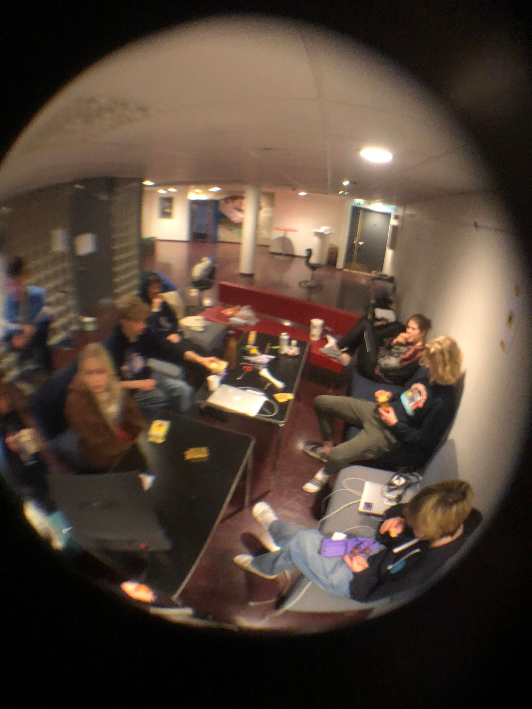

Revyåret starter med audition. Først er det lukket audition foran instruktøren, mens de andre venter på sin tur i et annet rom. Senere er det en åpen audition foran skolen hvor vi blir delt inn i grupper (ulike band). Sangen vi får tildelt må vi finne arrangement på selv, vi brukte musescore. Alle bandene får 2 timer på å øve i skolens auditorium et par dager før åpen audition.
Mer engasjement for bandet?? Nettsiden er her
For LOL kommer man på revytirsdag og blir kjent med sjefene og andre gruppemedlemmer. LOL = Lyd Og Lys og er en helt sjuk gruppe. Jeg kan ikke skrive så mye mer, for jeg var ikke medlem. MEN !! Jeg vet om et medlem som helt klart setter L-en i LoL.
I begge disse gruppene, og de andre gruppene i revyen, finner man gode og genuine venner. Man blir kjent med kule folk på tvers av trinn og linjer. Så, det anbefales virkelig å delta!
For å se mer backstage av revyen
Revybandet og LoL har egne IG kontoer!
FØLG DEM !!!